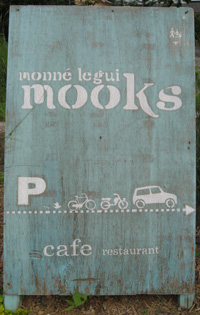

Mooks – A Trendy Dining Experience
Mooks (a.k.a. monne legui mooks) holds a special place in my heart. Combining a trendy atmosphere, delicious food, and friendly staff, it keeps me coming back time after time. Mooks is located in the small pottery town of Hasami. The owners, originally from Tokyo, opened Mooks about 3 years ago. Their urban and international perspective on food, presentation, and atmosphere make Mooks unique not only for Hasami, but for the whole of Nagasaki prefecture.

Food
Mooks features a small but eclectic menu. During lunch hours, a limited set menu is offered. One usually has the choice of a soup or smoked salmon for an appetizer along with a choice of one out of three entrees. A limited number of drinks and desserts are also available. The dinner menu is more comprehensive, featuring numerous appetizers, side dishes, drinks, and desserts.
Fish and Chips
My favorite dish at Mooks is the fish and chips. This may have peeked your interest already, since fish and chips is a rare dish in Nagasaki (perhaps non-existent, as I can’t think of another restaurant in the prefecture that offers it). However, there is more than its simple existence to praise. Like with most dishes on the menu, Mooks takes a unique perspective on fish and chips. The lightly-breaded fish and perfectly-fried potatoes are joined by a vegetable (usually eggplant or mushrooms) and lightly coated in a delicious sweet chili sauce. The dish is garnished with fresh lettuce and diced tomatoes and a light mayonaisse is provided for dipping. It’s superb.
Mooks also offers a German sausage combo platter, showcasing delicious sausages with spicy mustard. Another item that has appeared on the menu recently is Mooks chicken curry. With it, Mooks again shows off it’s ability to give subtle twists to traditional dishes. Unlike standard curry, which tends to be thick and heavy, Mooks chicken curry is thin and light with delightfully tender chicken and an assortment of vegetables not found in average Japanese curry such as eggplant and pumpkin.
Mooks Chicken Curry
Without a doubt, you’ll be hard-pressed to find anything on the menu that isn’t to like. The proportions are just right, the ingredients are fresh, and the presentation is elegant. You should be aware that the menu does change from time to time, so some items might not always be present. However, rest assured that even if a favorite dish isn’t on the menu, it will have been replaced by something equally amazing. Before I wrap up this section on food, let me mention one of their desserts briefly. The cheesecake is out of this world. Try it.
Service
Mooks is run by a small group of young women and men who are all very friendly. The first time I visited Mooks, the waiter was more than happy to explain the contents of dishes I didn’t understand on the menu (though with titles like “Potatoes and Bacon in Mustard Sauce,” not many of them need explanation). Mooks can get busy on the weekends, but I’ve never had to wait to be seated. Food is served in reasonable time, which is fortunate because I’m usually drooling for it as soon as I set eyes on the menu.
Price
The prices at Mooks are by no means exhorbitant, but they aren’t cheap either. ¥900 to ¥1200 is acceptable for an entree, but ¥750 for an appetizer is a bit much. However, the quality of the food makes the price more than deserving. The ingredients are fresh and you can tell each dish is made with individual care and attention. The lunch menu, while limited in choices, is a bit more reasonable than the dinner menu. The lunch set (including an appetizer and an entree) costs just ¥1000. A drink and/or dessert can be added for an extra ¥200 each (half the price they cost at dinner time).
Ambience
Nice and comfy
The trendiness I’ve mentioned certainly isn’t limited to the food. The atmosphere of the restaurant takes influence from the owners’ Tokyo roots as well. Mooks may be housed in a thin-walled, old building (rumor is it used to be a pottery house), but the attention to detail makes it feel like much more. From the hand-made silverware boxes to the comfy couches and chairs to the strings of lights inside and outside the restaurant, Mooks just feels . . . cool. It has a simple, understated style that’s almost classic. Combined with the great food and service, Mooks goes beyond a pleasant dining experience.
Location
Mooks’ location might be the only thing going against it. Hasami is a great town, no doubt, but a bit out of the way for most folks in Nagasaki prefecture. You’ll pretty much need a car if you want to get there easily. Another issue is that the restaurant is poorly marked. Actually, it’s not marked at all. The best indicator of the restaurant is this sign for the shop next to Mooks. UPDATE: Mooks now has a sign, making it a bit easier to locate.

View larger map
モンネ ルギ ムック
monne legui mooks
東彼杵郡波佐見町井石郷 2187-4
Nagasaki-ken, Higashisonogi-gun,
Hasami-cho, Iseki-go 2187-4
Tel: 0956-85-8033
Hours: 12pm – 10pm
Closed: Tue, Wed
Website: http://mooks.jp
Don’t allow the location to discourage you though. Mooks is certainly worth the trip. Just use the map above and you shouldn’t have a problem. If you’re headed there after dark falls, keep an eye out for the trees covered in Christmas lights. In the daytime, look for the bookstore across the street.
If you want delicious food in a trendy atmosphere, you can’t do much better than Mooks. It’s pretty clear at this point how I feel about Mooks, but I encourage you to check it out and see for yourself.
Enjoy!
-Chris Breiding